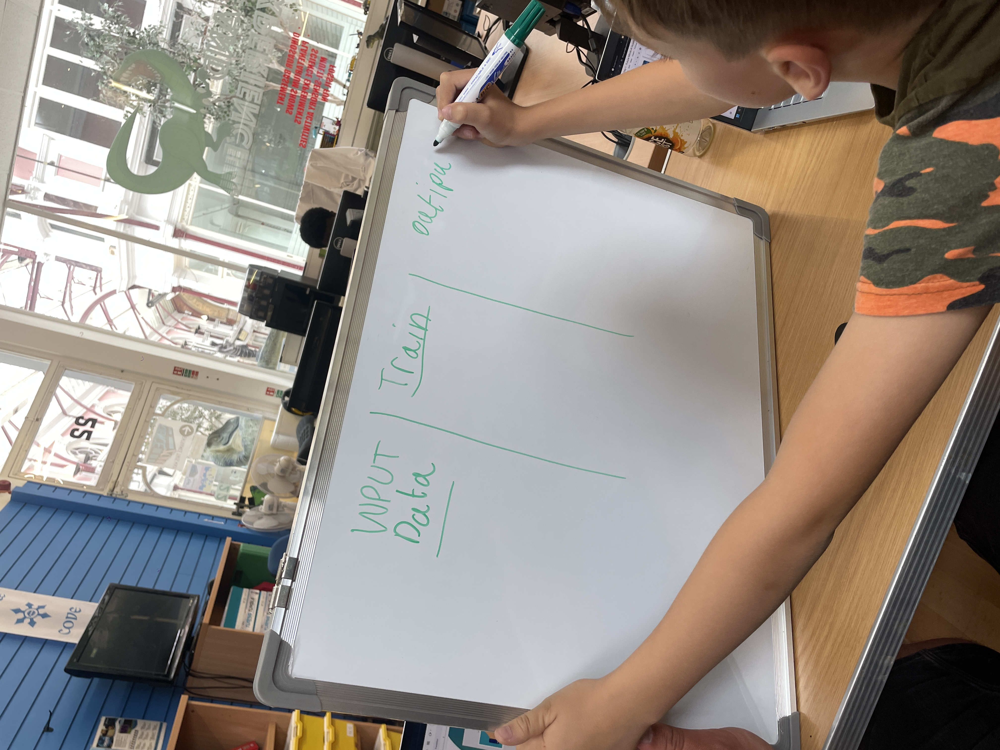
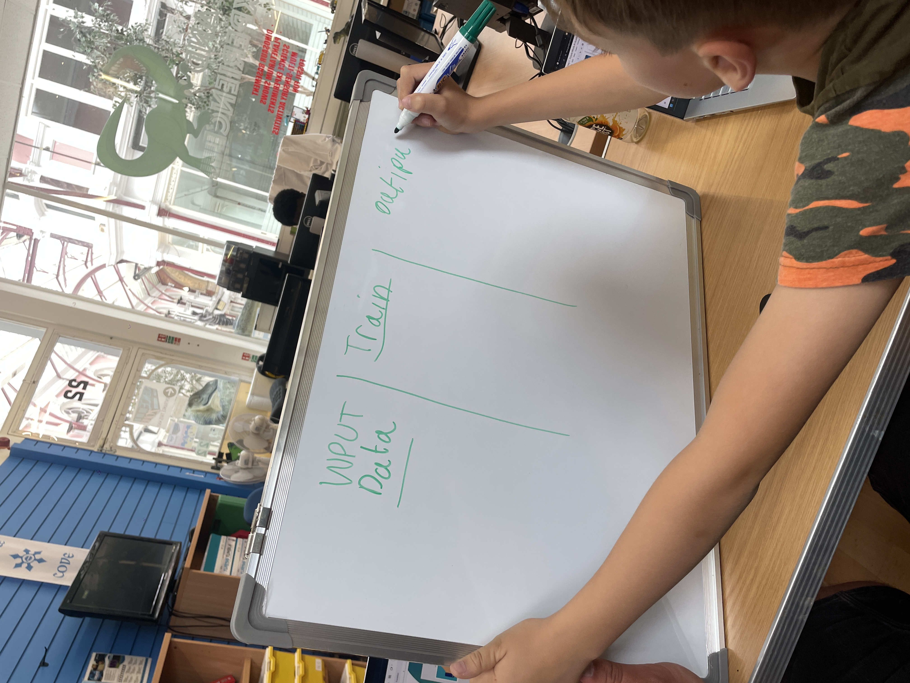

Current Teaching
I am currently teaching creative coding to university students since 2022, and to young people who book onto workshops at the Science Zone.
I've been working with the Science Zone since Autumn 2022.
Plan for 2024: Making Sense Workshops
Applied for a grant to deliver workshops to young people and the community around Boscombe. Making Sense aims to break down barriers to creating technology, programming, and AI by using tools designed for accessibility and creativity to access computing.
Steps Taken:
- Market Research: Conducted surveys and focus groups within the community to gauge interest and identify the most effective teaching methods.
- Initial Workshops: Partnered with Science Zone to deliver introductory coding workshops for 7-16 year-olds, gaining valuable insights and experience.
- Curriculum Development: Developed a comprehensive curriculum that includes basic coding principles, introduction to AI, and practical art projects using creative tools.
- Community Engagement: Established connection with a local school to create interest and support for the initiative. Specifically, received strong interest and support from Pokesdown Community Primary School, highlighting the community demand and potential impact of the workshops.
WAITING ..........